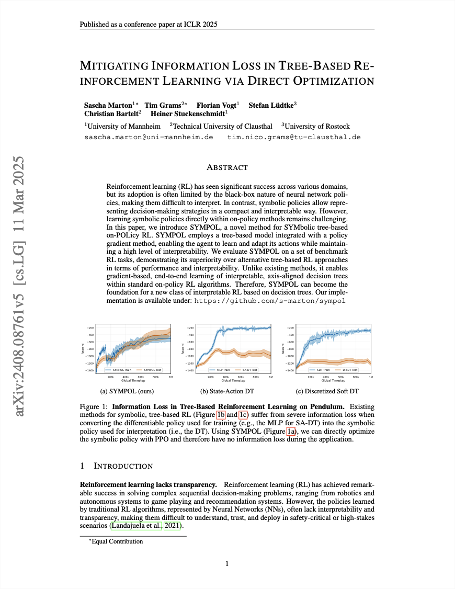
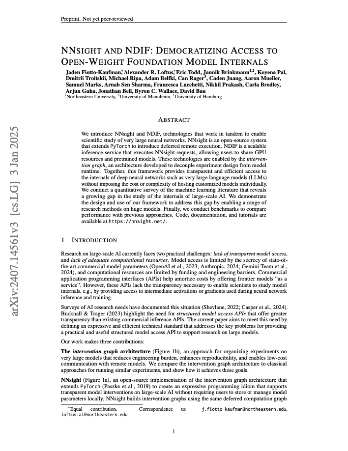
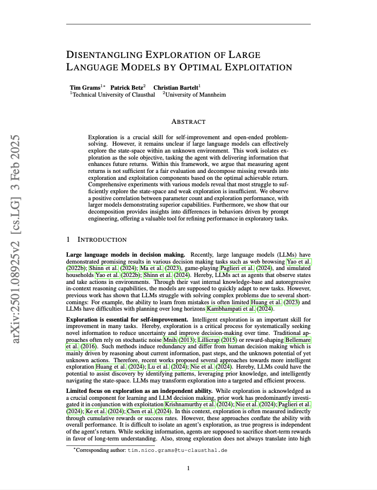
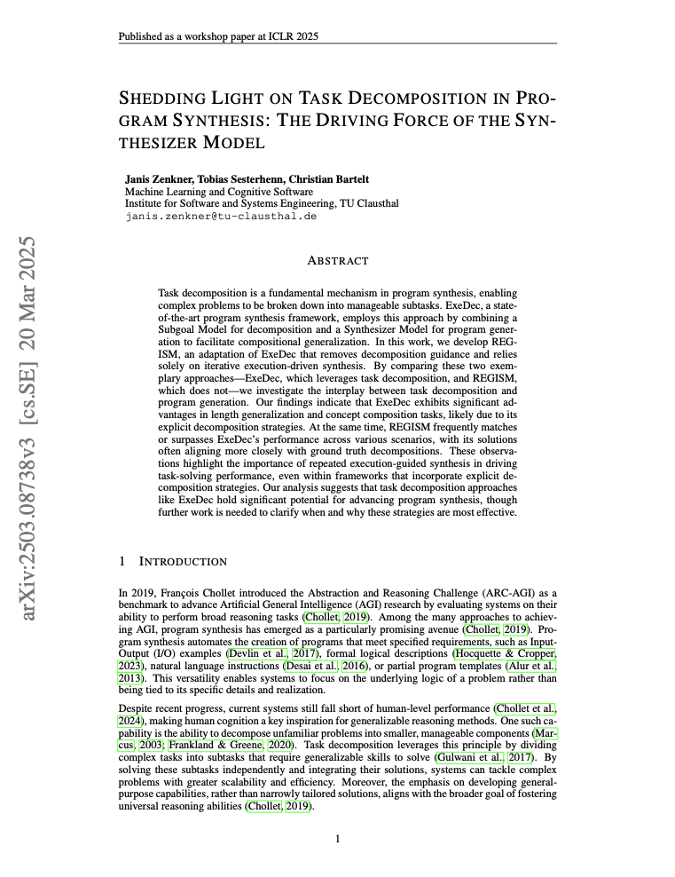
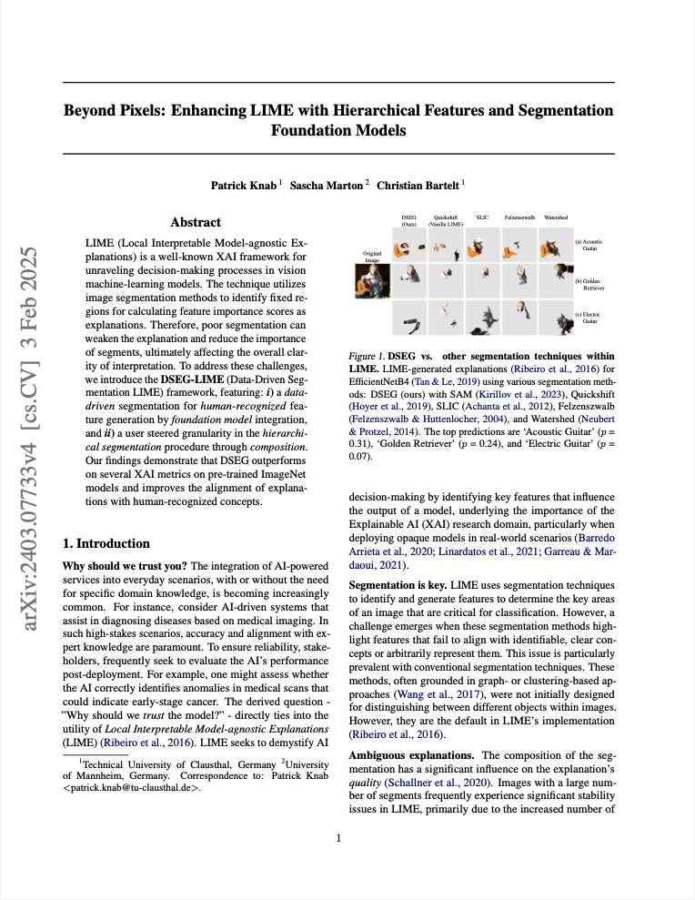
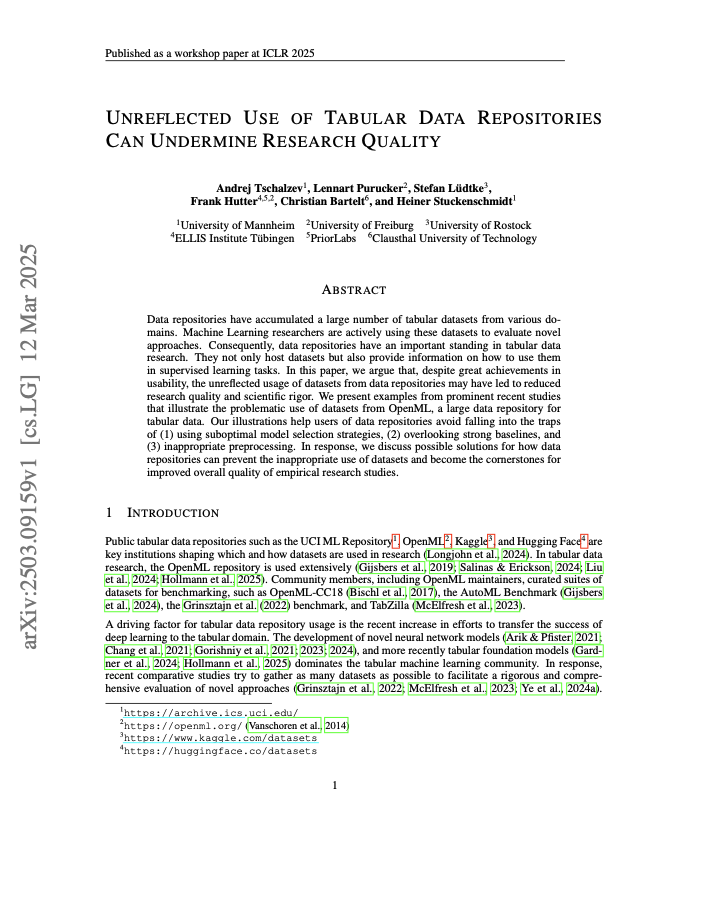

CORE research group at ICLR 2025
6 papers authored or co-authored by CORE members have been accepted at the main conference and workshops at The 2025 International Conference on Learning Representations (ICLR) in Singapore.
Main Conference

Mitigating Information Loss in Tree-Based Reinforcement Learning via Direct Optimization
University of Mannheim
TU Clausthal
University of Rostock
The paper introduces SYMPOL, a novel method that integrates symbolic, tree-based models with policy gradient methods to enhance interpretability in reinforcement learning (RL). By enabling direct, end-to-end optimization of axis-aligned decision trees within standard on-policy RL algorithms, SYMPOL addresses the challenge of information loss associated with traditional neural network policies.

NNsight and NDIF: Democratizing Access to Open-Weight Foundation Model Internals
Northeastern University
TU Clausthal
University of Hamburg
The paper introduces NNsight, an open-source extension to PyTorch enabling deferred remote execution, and NDIF, a scalable inference service for sharing GPU resources and pretrained models. Together, they facilitate transparent access to the internals of large neural networks, such as large language models, without requiring individual hosting of customized models.
Workshops

Disentangling Exploration of Large Language Models by Optimal Exploitation
TU Clausthal
University of Mannheim
The paper investigates the exploration capabilities of large language models (LLMs) by isolating exploration as the sole objective and introducing a framework that decomposes missing rewards into exploration and exploitation components based on the optimal achievable return.

Shedding Light on Task Decomposition in Program Synthesis: The Driving Force of the Synthesizer Model
TU Clausthal
This paper compares ExeDec, a program synthesis framework that uses explicit task decomposition, with REGISM, its variant that relies solely on iterative execution-guided synthesis. While ExeDec shows strong performance in length generalization and concept composition due to its decomposition strategy, REGISM often matches or exceeds its performance, suggesting that repeated execution can be equally or more effective in many scenarios.

Beyond Pixels: Enhancing LIME with Hierarchical Features and Segmentation Foundation Models
TU Clausthal
University of Mannheim
The paper introduces DSEG-LIME, an improved framework for Local Interpretable Model-agnostic Explanations (LIME) in image analysis. By integrating data-driven segmentation through foundation models and enabling user-controlled hierarchical segmentation, DSEG-LIME enhances interpretability by aligning explanations more closely with human-recognized concepts, outperforming traditional methods on several explainable AI metrics.

Unreflected Use of Tabular Data Repositories Can Undermine Research Quality
University of Mannheim
TU Clausthal
University of Rostock
University of Freiburg
The paper highlights that indiscriminate utilization of datasets from repositories like OpenML may compromise research integrity. The authors present cases illustrating issues such as suboptimal model selection, neglect of robust baselines, and improper preprocessing, and propose enhancements to data repository practices to bolster empirical research standards.